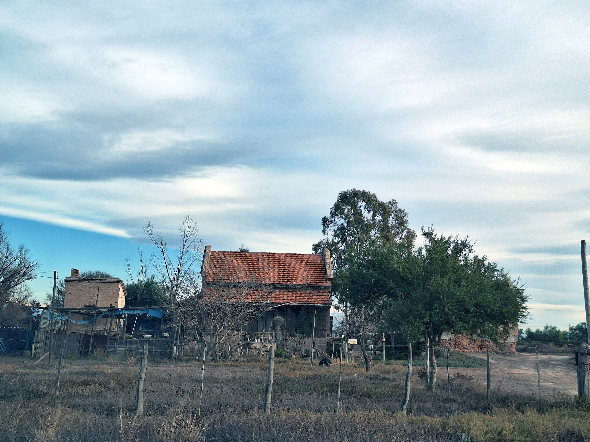
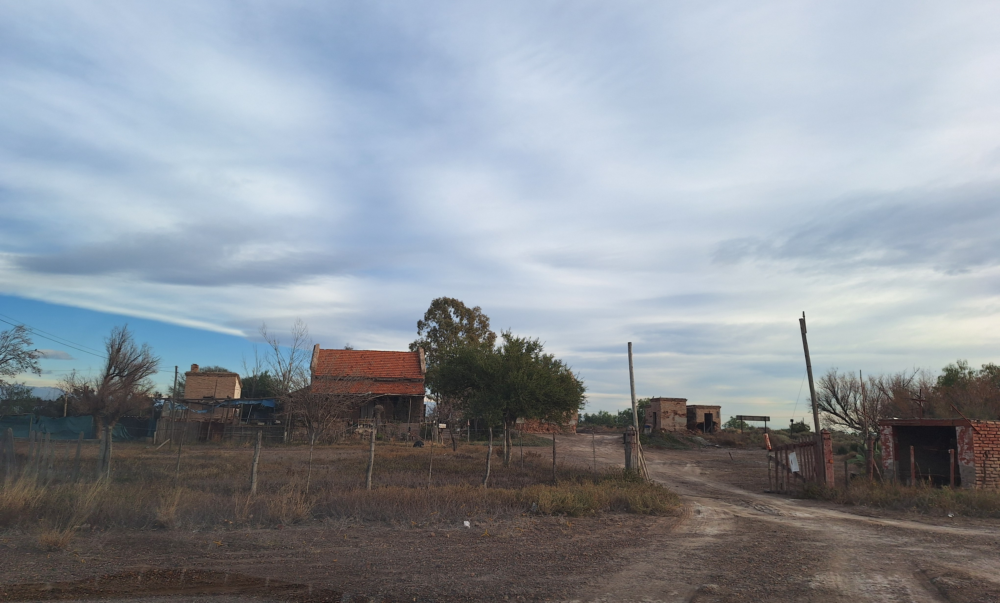

La estación ferroviaria se ubica sobre el Carril Nuevo (RP61), a 700 metros al norte de la Ruta provincial 60 y en proximidad a la Calle Remedios de Escalada, uno de los principales ejes históricos del distrito. Se construyó en el año 1908, y tiene un estilo arquitectónico pintoresquista, con el uso de ladrillo cocido a la vista y madera, con cubierta de teja cerámica. Presenta un diseño simétrico, con galerías abiertas de columnas de madera hacia el andén y hacia el lado opuesto. Posee pequeñas dimensiones y cuenta con el núcleo de baño de forma independiente.

Disponía de un galpón para guardado de las cargas, ya desaparecido. El edificio de estación cumplió funciones administrativas y de vivienda del jefe de estación. Actualmente se encuentra sin funcionamiento, utilizado ilegalmente como residencia.

En cuanto al paisaje que la contiene, se encuentra en una zona con subdivisión de parcelas para uso residencial, aunque hacia el este destacan paños cultivados con viñedos y horticultura.